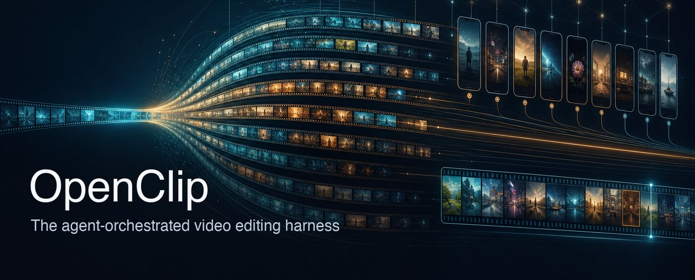

Turn one long video into cut-edited originals, shorts, long-form, subtitles, and thumbnails — rendered by a fleet of parallel AI agents you steer.
GitHub · Design · Tool reference · llms.txt
flow1 Cut-editProxy → parallel STT → a cut-editing debate: proposers argue through filler / pacing / narrative lenses, a judge reconciles → cut-edited original + subtitles.
flow2 ShortsOne long video → hook mining across transcript sections → captioned 9:16 shorts, ends snapped to the payoff's last word — plus a thumbnail per short.
flow3 AssembleWeave N source videos into one longform, then mine its hook moments into shorts.
flow4 ThumbnailsHook-matched thumbnails: the most representative frame with a burned headline, and/or a gpt-image design.
confirmed advances.oc steer --note "cut the intro harder" mid-run;
workers honor it over their own judgment. Nothing creative auto-converges past you.resumed: true) instead of re-billing Whisper and gpt-image.